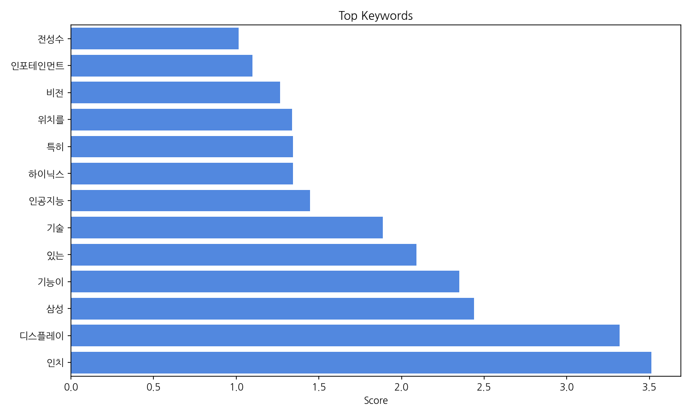
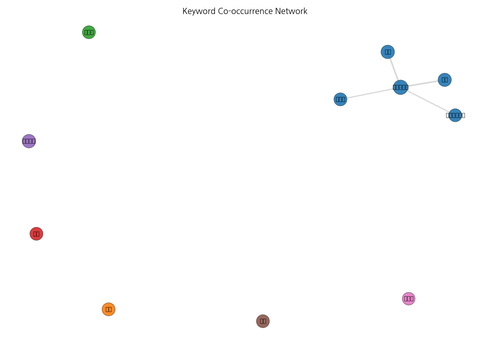
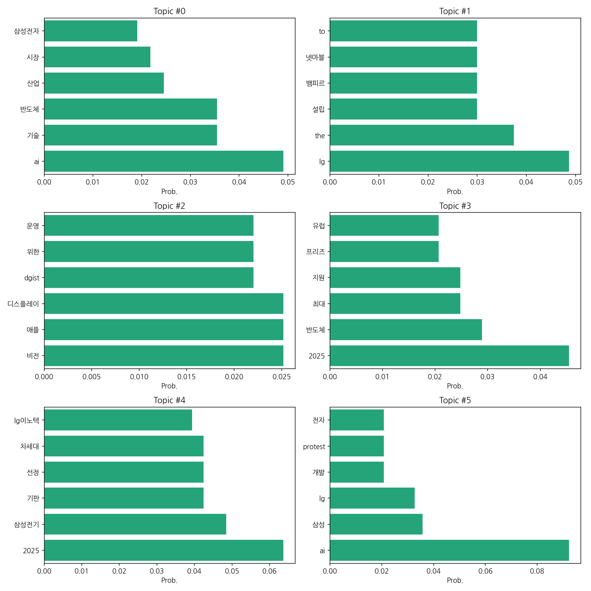
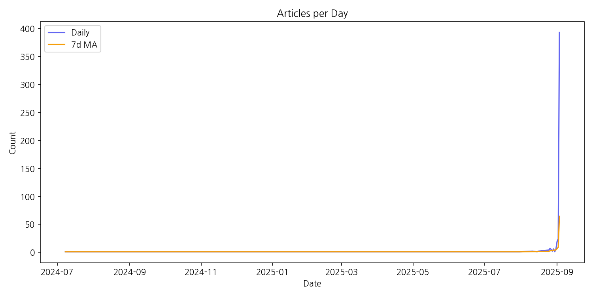

이번 기간 핵심 토픽과 키워드, 주요 시사점을 요약합니다.
핵심 맥락: 제공된 데이터는 한국 뉴스에서 주로 AI 기술, 반도체 산업, 그리고 삼성과 LG 등 주요 기업의 사업 전략 및 투자 동향을 다루고 있습니다. 특히, 2025년을 기점으로 반도체 산업의 지원 확대, 차세대 기술 경쟁, 그리고 관련 기업들의 투자 및 성과에 대한 보도가 집중되고 있으며, 이는 글로벌 기술 패권 경쟁 심화와 한국 기업들의 대응 전략을 보여주는 것으로 해석할 수 있습니다. 이는 AI 기술과 반도체 산업의 밀접한 연관성과 국내 주요 기업들의 시장 경쟁력 확보 노력을 반영합니다.
최근 변화/스파이크: 2025년 9월 초에 기사 수가 급증하는 현상이 나타났습니다. 이는 특정 시점에 발생한 주요 뉴스 사건이나 발표, 혹은 관련 정책 변화 등으로 인해 관련 기사 보도가 폭발적으로 증가했음을 시사합니다.
실무 인사이트:
긴급 모니터링 강화: 2025년 9월 초 기사 급증 원인을 즉시 조사하여, 관련 뉴스 및 시장 동향을 면밀히 모니터링하고, 경쟁사 및 정부 정책 변화에 대한 신속한 대응 전략을 수립해야 합니다. 특히, AI, 반도체 산업 관련 주요 뉴스에 대한 실시간 알림 시스템 구축이 필요합니다.
| Rank | Keyword | Score |
|---|---|---|
| 1 | 인치 | 3.513 |
| 2 | 디스플레이 | 3.319 |
| 3 | 삼성 | 2.44 |
| 4 | 기능이 | 2.35 |
| 5 | 있는 | 2.089 |
| 6 | 기술 | 1.888 |
| 7 | 인공지능 | 1.446 |
| 8 | 하이닉스 | 1.344 |
| 9 | 특히 | 1.344 |
| 10 | 위치를 | 1.338 |
| 11 | 비전 | 1.265 |
| 12 | 인포테인먼트 | 1.098 |
| 13 | 전성수 | 1.015 |




핵심 맥락: 제공된 데이터는 한국 뉴스에서 주로 AI 기술, 반도체 산업, 그리고 삼성과 LG 등 주요 기업의 사업 전략 및 투자 동향을 다루고 있습니다. 특히, 2025년을 기점으로 반도체 산업의 지원 확대, 차세대 기술 경쟁, 그리고 관련 기업들의 투자 및 성과에 대한 보도가 집중되고 있으며, 이는 글로벌 기술 패권 경쟁 심화와 한국 기업들의 대응 전략을 보여주는 것으로 해석할 수 있습니다. 이는 AI 기술과 반도체 산업의 밀접한 연관성과 국내 주요 기업들의 시장 경쟁력 확보 노력을 반영합니다.
최근 변화/스파이크: 2025년 9월 초에 기사 수가 급증하는 현상이 나타났습니다. 이는 특정 시점에 발생한 주요 뉴스 사건이나 발표, 혹은 관련 정책 변화 등으로 인해 관련 기사 보도가 폭발적으로 증가했음을 시사합니다.
실무 인사이트:
긴급 모니터링 강화: 2025년 9월 초 기사 급증 원인을 즉시 조사하여, 관련 뉴스 및 시장 동향을 면밀히 모니터링하고, 경쟁사 및 정부 정책 변화에 대한 신속한 대응 전략을 수립해야 합니다. 특히, AI, 반도체 산업 관련 주요 뉴스에 대한 실시간 알림 시스템 구축이 필요합니다.
| Idea | Target | Value Prop | Score |
|---|---|---|---|
| AI 기반 스마트팩토리 솔루션 | 국내 중소 제조업체 생산 관리자 및 운영 담당자 (직원 50-500명) | AI 기반의 사용자 친화적인 스마트팩토리 솔루션을 통해 생산성 향상, 불량률 감소, 유지보수 비용 절감을 지원합니다. 클라우드 기반 서비스 제공으로 초기 투자 비용을 낮추고, 간편한 사용자 인터페이스를 통해 전문 인력 없이도 쉽게 도입 및 운영이 가능합니다. 특히, 실시간 데이터 분석 및 예측 기능을 통해 문제 발생 예방… | 3.8 |
| AI 기반 스마트팜 맞춤형 환경 제어 시스템 | 스마트팜 운영 농가 (규모: 1000평 이상), 특히 시설채소 및 과일 재배 농가 | AI 기반 머신러닝 알고리즘을 활용하여 작물의 생육 환경(온도, 습도, 광량, CO2 농도 등)을 실시간으로 분석하고, 최적의 환경을 자동으로 제어하여 생산성을 향상시키고, 에너지 소비를 절감합니다. 농가의 경험과 데이터를 결합하여 작물별 맞춤형 제어 전략을 제공하며, 사용자 친화적인 인터페이스를 통해 쉽게 시스템을 관리… | 3.8 |
| AI 기반 개인 맞춤형 스마트 헬스케어 솔루션 | 만성 질환자(당뇨병, 고혈압 등) 개인 및 관련 의료기관 | AI 기반 개인 맞춤형 건강 관리 솔루션은 개인의 건강 데이터를 분석하여 맞춤형 건강 관리 계획을 제공합니다. 웨어러블 기기 및 모바일 앱을 통해 실시간 건강 데이터를 수집하고, AI 알고리즘을 통해 개인의 건강 상태를 정확하게 파악하여 예측 및 예방 서비스를 제공합니다. 기존 서비스와 달리, 저렴한 비용으로 높은 정확… | 3.8 |
| AI 기반 반도체 설계 최적화 플랫폼 | 삼성전자, SK하이닉스 등 국내 주요 반도체 기업의 설계 엔지니어 및 연구팀 | AI 기반 자동화된 설계 최적화 및 검증 시스템을 통해 설계 시간을 단축하고, 에너지 효율을 높이며, 오류를 최소화한다. 경쟁사 대비 빠른 설계 주기와 높은 품질을 제공하여 시장 경쟁력을 강화한다. 기존 설계 도구와의 연동을 통해 기존 인프라 활용을 극대화하고, 사용자 친화적인 인터페이스를 제공한다. | 3.5 |
| AI 기반 맞춤형 디스플레이 광고 플랫폼 | 대형 쇼핑몰, 백화점, 지하철역 등 옥외 디스플레이 운영 업체 및 광고주 | AI 기반 실시간 데이터 분석을 통해 옥외 디스플레이에 최적화된 맞춤형 광고를 제공합니다. 소비자의 위치, 시간, 선호도 등을 분석하여 개인별 맞춤 광고를 노출하고, 실시간 효과 측정 및 최적화를 통해 광고 효율을 극대화합니다. 이는 광고주의 ROI 향상과 소비자의 만족도 증대를 동시에 달성하는 솔루션입니다. | 3.5 |